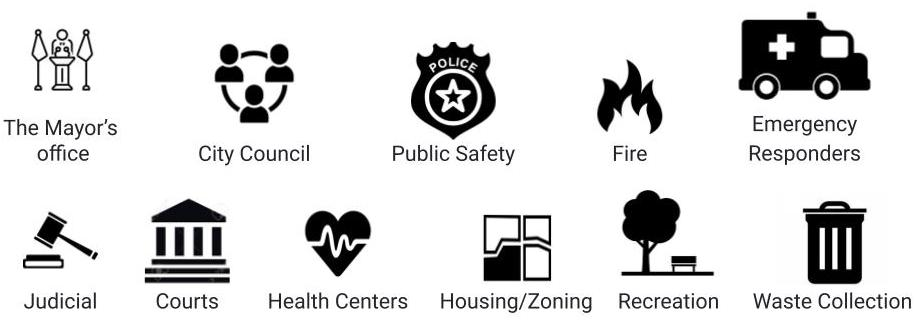

Funding for Public Safety comes from The General Fund. The General Fund covers expenses for what we typically think a city does - Mayor, city council, police and more. Specifically, the General Fund covers expenses for 11 departments which cover the following areas:
The Department of Public Safety makes up 56.26% of the General Fund budget. The next largest Department is the Department of Public Works, which only takes up 12.13%. The General Fund gets its money from many sources, but most of it (66%) comes from income taxes.
The summer 2020, protests all around America were happening asking for “Defund the Police.” The topic became a national focus, but still has many open questions. What does it mean to defund the police? Let’s start with a short history of Cleveland police reforms.
In 2004, after years of budget deficits, Cleveland city government was finally forced to make budget cuts to the police department.
More cuts. Note that a decrease in dollars did not mean a decrease in police officers.
Budget cuts did not last.
Timothy Russel and Malissa were shot by the police 137 times.
Tamir Rice, an unarmed 12-year-old with a toy gun, was fatally shot by the Cleveland police at close range in the Cudell Commons park, seconds after the police arrived.
In 2015, the Department of Justice issued a consent decree because of constituent excessive use of force. The consent decree had a number of impacts on the Public Safety budget.
Read the Consent DecreeThe consent decree changed the budget by allocating new funding to support staffing for the Office of Professional Standards, Police Review Board, Community Police Commission, Police Inspector General, and Department of Justice. The support for these entities added approximately $7.7 M to the Public Safety budget each year, beginning in 2016. As a result, budgeted staffing levels fluctuated during ensuing years, reaching a low of 1,773 full time employees in 2016 despite a $13.2 M increase from the 2015 budget year. Adjusted for inflation, the 2016 budget year was equivalent to the 2010 funding year, despite the 2010 budget allowing for 90 more full time employees.
The murders of George Floyd, Breonna Taylor and other unarmed Black Americans such as locals like Desmond Franklin, ignited widespread protests against police brutality, militarized police forces, and the larger institution of policing in the United States. Black lives matter has been at the forefront of this movement, inspiring widespread demands for cities to “Defund the Police.”
Here are the organizations working on police reform in Cleveland Black Sprint CLE Demands 1 Year